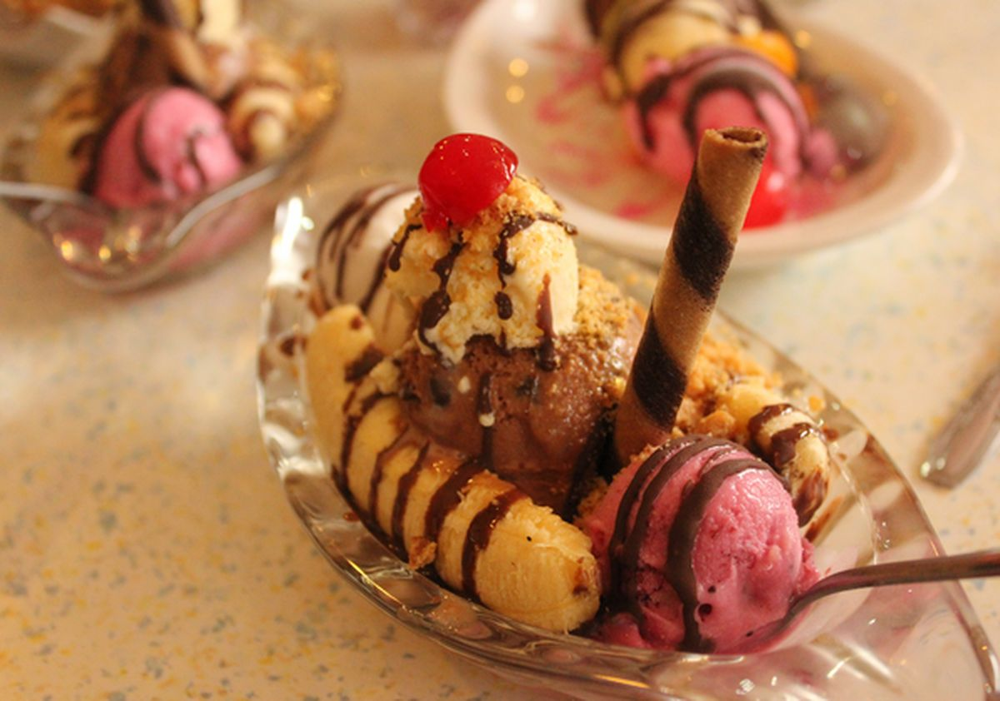
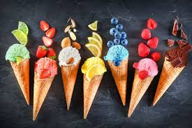

Apa Itu Es Krim?
Es krim adalah makanan penutup beku yang dibuat dari produk susu, gula, dan berbagai bahan tambahan untuk memberikan rasa dan tekstur. Biasanya disajikan dalam bentuk cone, cup, atau sebagai topping untuk makanan lain.
Sejarah Es Krim
Asal-usul es krim bisa ditelusuri kembali ke zaman kuno, di mana es dan salju digunakan untuk membuat hidangan beku yang manis. Namun, es krim modern seperti yang kita kenal sekarang mulai berkembang pada abad ke-16 di Eropa, dengan resep yang terus berkembang seiring waktu.
Jenis-Jenis Es Krim
- Vanilla - Rasa klasik yang sering dijadikan dasar untuk berbagai topping.
- Coklat - Es krim dengan rasa coklat yang kaya dan creamy.
- Stroberi - Es krim dengan rasa stroberi yang segar dan sedikit asam.
- Mint Chocolate Chip - Es krim mint dengan potongan coklat chip.
- Durian - Rasa es krim yang eksotis dengan aroma dan rasa durian yang khas.
Fakta Menarik tentang Es Krim
Es krim adalah salah satu makanan penutup yang paling populer di dunia. Beberapa fakta menarik tentang es krim meliputi:
- Es krim telah ada sejak lebih dari 2.000 tahun yang lalu.
- Rata-rata orang Amerika mengonsumsi sekitar 20 liter es krim setiap tahunnya.
- Flavor es krim terpopuler di dunia adalah vanilla, diikuti oleh coklat dan strawberry.